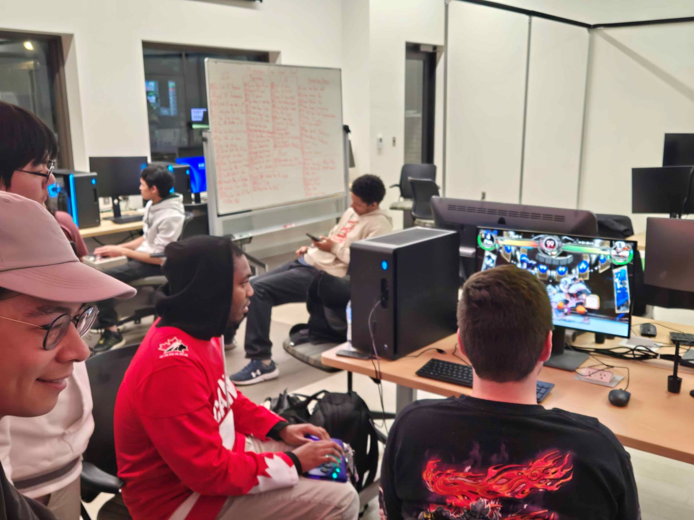
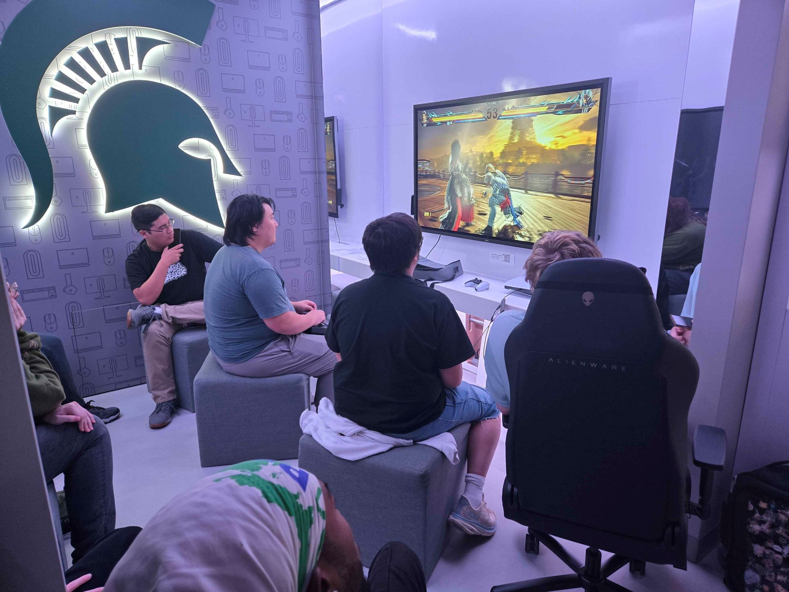

Luciano Marinaj - Aspiring UX Designer and community leader from Warren, Michigan
About
Hi there! My name is Luciano Marinaj. I am currently working on my Bachelor's degree in Information Science at Michigan State University with a minor in Business, where I have been heavily involved in fostering a community as the long-time president of the MSU Fighting Game Club. In my spare time, I like to read world literature, write, and create videos.
Projects
michiganfgc.com
With help from a public Github template from friends with the Ohio FGC, I created michiganfgc.com to connect people to their local fighting game community meetups across the state of Michigan!
With the cooperation of local tournament organizers, this website hosts a up-to-date calendar of weekly, monthly, and yearly events with Google Calendar integration — making it simple for tournament organizers to add their events to the site!
MSU Fighting Game Club
I lead the MSU Fighting Game Club, which I have been doing for the past four years. With the MSU Fighting Game Club, I have been responsible for running events anywhere from small to mid-sized weekly gatherings up to large-scale collaborative events with other clubs both at MSU and outside of MSU, as well as event promotion on social media and across campus. I also help coordinate travel to events throughout the United States, fostering a welcoming but competitive community that can compete and represent MSU at the national and international level in multiple fighting games.


Past tournaments held on MSU's campus by the Fighting Game Club
Video Content
I create video content both on my Youtube page and my Twitter page for fighting games. These videos range from frequent short-form entertainment content tailored for Twitter to more infrequent long-form educational content made for Youtube. I utilize tools such as Davinci Resolve, Capcut, and photo/audio editing software to create engaging videos.